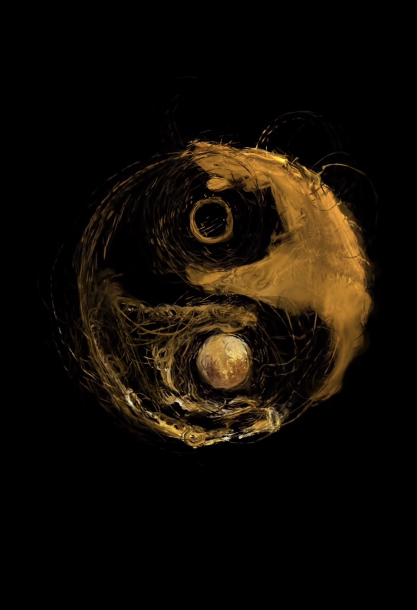
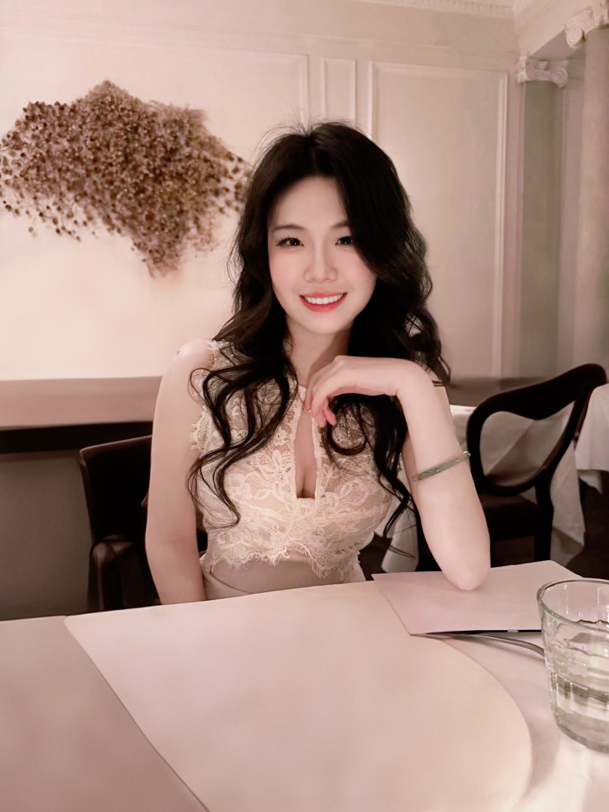
I am a first-year PhD researcher at the Hamlyn Centre, Imperial College London, advised by Prof. Etienne Burdet and Prof. Liyun Ma. I am also a research member of GrowAI.
I completed my Master's degree (GPA 3.97) at New York University, guided by Prof. Claudio Silva and Prof. W. Russell Neuman. Prior to that, I received my BEng with First Class Honours (Top 10%) from the University of Liverpool, advised by Prof. Hai-Ning Liang, now at HKUST(GZ).
My research navigates the frontier where machine intelligence meets human experience — with a focus on video reasoning, brain-inspired cognition, adaptive interaction, and embodied healthcare systems.
I have been incredibly fortunate to learn from and work alongside exceptional mentors whose guidance has profoundly shaped my academic journey. I am currently exploring brain-inspired AI with Zijian Ding at UMD. Previously, I was a Research Assistant at the NYU VIDA Lab, contributing to the DARPA Perceptually-enabled Task Guidance (PTG) project under Prof. Claudio Silva and Prof. Jing Qian. I have also had the privilege of working with Prof. Yukang Yan (University of Rochester) and Prof. Xuhai Xu (Columbia University) on adaptive systems and reinforcement learning — both truly inspiring professors! My research journey began with Prof. Wenge Xu at Birmingham City University, where I first discovered my passion for VR/AR and human-centred design.
Excited to serve as Session Chair at ACM CHI 2026!
Submitted two first-author papers to UIST and IROS — fingers crossed!
Organized ShallWe Tech x TRAE London #VibeCoding event at AWS.
Co-hosted OpenClaw Night at Netmind.AI & Z.AI.
Released our million-scale video reasoning dataset — VBVR is live!
Officially started my PhD at Imperial College London. A new chapter begins.
Received an Imperial College school scholarship — finally made it after many rounds of setbacks!
Officially graduated with my Master's from NYU. New York, thank you for everything.
I design, build, and evaluate intelligent interactive systems that bridge video reasoning, neuro-inspired cognition, affective intelligence, and embodied healthcare — creating technology that understands, adapts, and empowers.
Google Scholar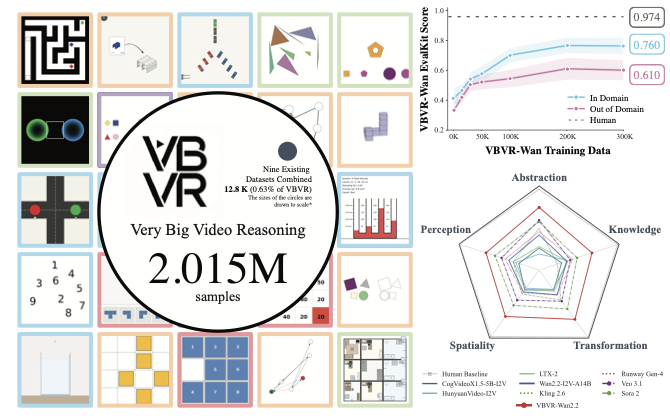
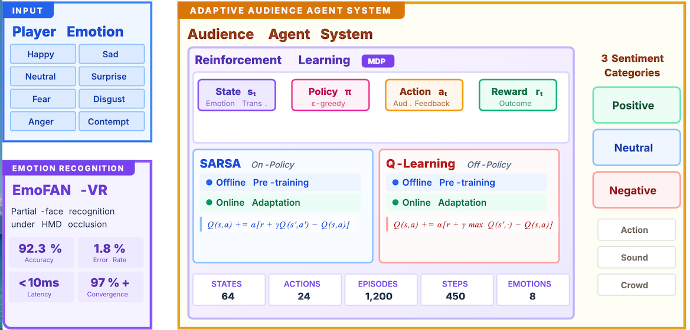
Shaoyue Wen, et al.
Personalizes virtual audience feedback to enhance public speaking training through real-time AI analysis.
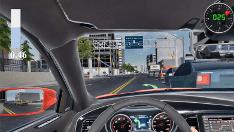
Shaoyue Wen, Songming Ping, Jialin Wang, Hai-Ning Liang, Xuhai Xu, Yukang Yan
A voice-based adaptive interface adjusting interaction style based on cognitive load for safer driving.
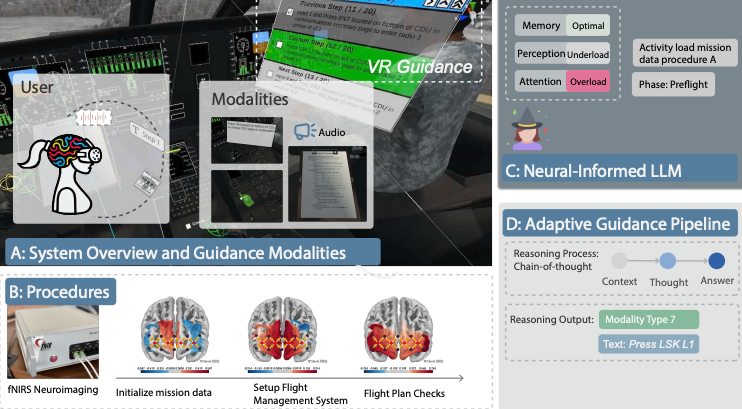
Shaoyue Wen, Michael Middleton, Songming Ping, Nayan N Chawla, Guande Wu, Bradley S Feest, Chihab Nadri, Yunmei Liu, David Kaber, Maryam Zahabi, Ryan P McMahan, Sonia Castelo, Ryan McKendrick, Jing Qian, Cláudio T Silva
An intelligent copilot adapting to user behavior in VR for personalized guidance.
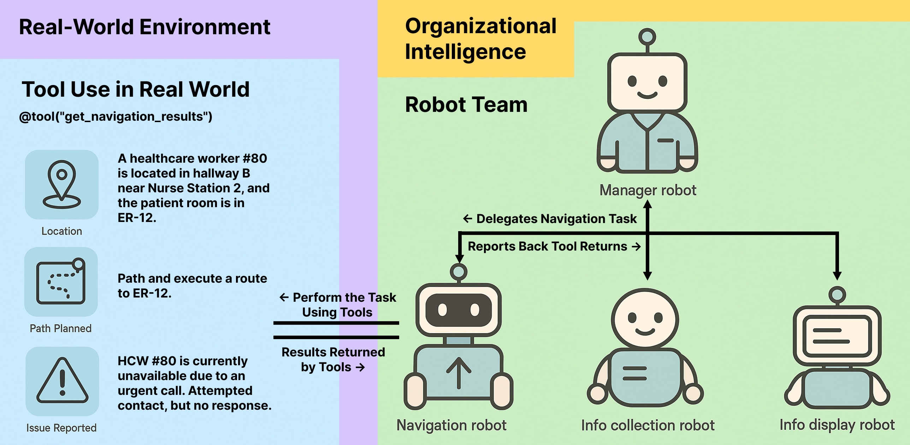
Yuanchen Bai, Zijian Ding, Shaoyue Wen, Xiang Chang, Angelique Taylor
Hierarchical multi-agent robotic system revealing coordination failures and autonomy-stability trade-offs.
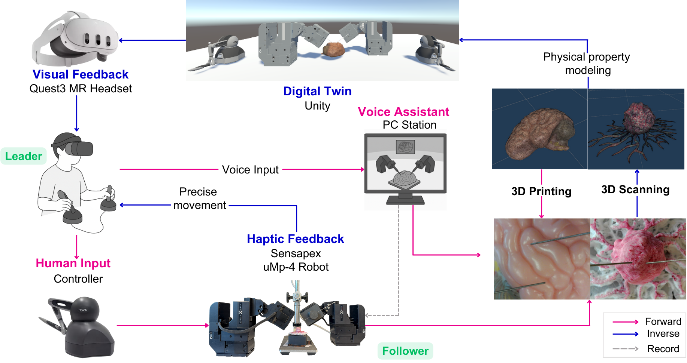
Shaoyue Wen, et al.
Integrating haptic feedback, digital twin, and mixed reality for microsurgery training.
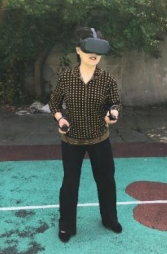
W. Xu, H.N. Liang, K. Yu, S. Wen, N. Baghaei, H. Tu
Investigating factors influencing older adults' acceptance of VR exercise games. 103 citations
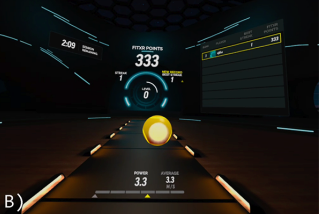
W. Xu, H.N. Liang, N. Baghaei, X. Ma, K. Yu, X. Meng, S. Wen
VR exergames as mental health intervention tools for students. 83 citations
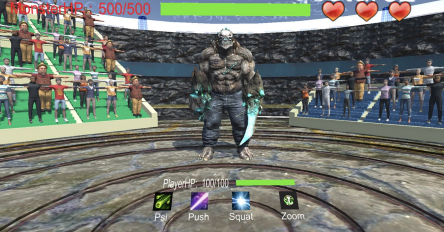
W. Xu, H.N. Liang, S. Wen, et al.
How NPC audience feedback impacts older adults' engagement in VR exercise gaming.
Beyond research, I am also a curator — organizing exhibitions that bridge contemporary art, technology, and cross-cultural dialogue across world-class institutions.
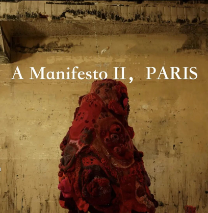
A Manifesto II, Paris · Feb 2025
International collaborative exhibition celebrating artistic freedom at the crossroads of civilizations.
Art and Making · Mar 2026
Academic forum on material culture, craft, and emerging practices at BP Theatre.
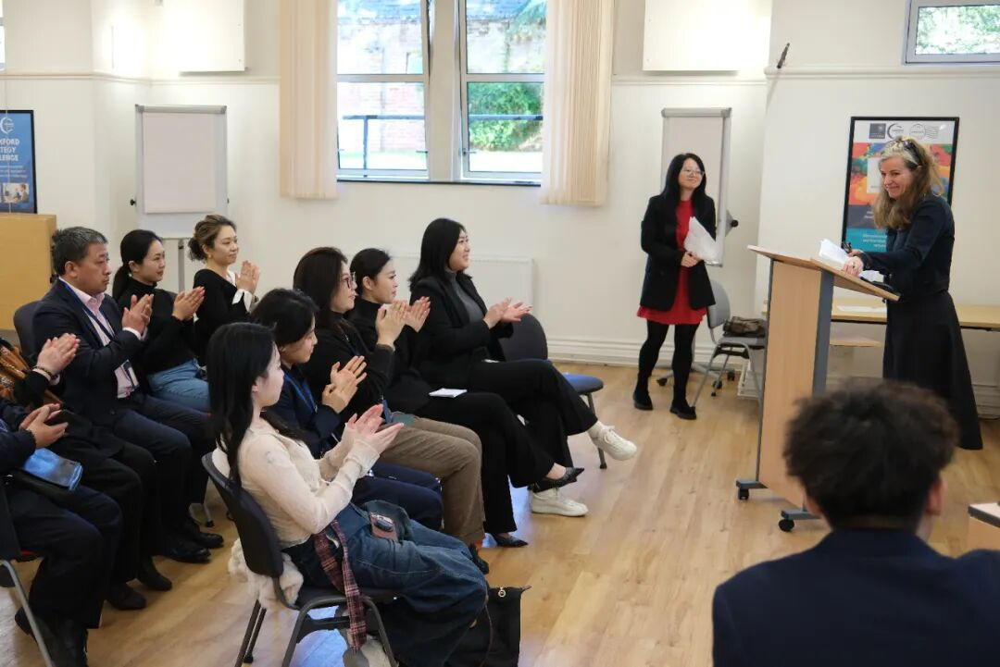
Contemporary Practice II · Mar 2026
Forum on craft, generation, and responsibility in contemporary art practice.
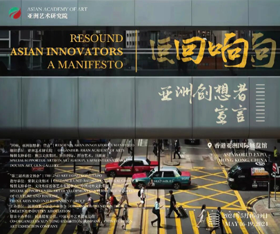
Resound: A Manifesto · May 2024
50+ artists, 100+ works across sculpture, painting, light installations, and digital art.